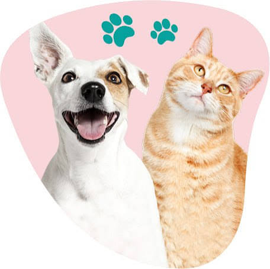

Турбота про домашніх улюбленців
Регулярні профілактичні огляди допомагають підтримувати здоров'я ваших тварин.
м. Конотоп
Ми піклуємося про здоров'я ваших домашніх улюбленців 24 години на добу.
Записатись на прийом
Регулярні профілактичні огляди допомагають підтримувати здоров'я ваших тварин.
Забезпечуйте улюбленців правильним харчуванням, чистою водою та регулярними оглядами.
Ветеринарна клініка «Друзі Тварин» знаходиться у місті Конотоп Сумської області. Ми дбаємо про здоров'я та комфорт ваших улюбленців.
Переглянути контакти та карту